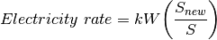

9. Unit metaclasses and decorators¶
Unit metaclasses and decorators extend the behavior of Unit subclasses.
9.1. mixer metaclass¶
Unit subclasses that implement the mixer metaclass behave like mixers regarding mass and energy balances:
In [1]:
import biosteam as bst
import biosteam.units.metaclasses as meta
# Set up Stream.species
bst.Stream.species = bst.Species('Water', 'Ethanol')
# Make Unit subclass
class MixerUnit(bst.Unit, metaclass=meta.mixer): pass
s1 = bst.Stream(Water=200, Ethanol=100, T=320)
s2 = bst.Stream(Water=100, Ethanol=100, T=300)
unit = MixerUnit(ins=(s1,s2))
unit.simulate()
unit.show()
MixerUnit: U1
ins...
[0] d1
phase: 'l', T: 320 K, P: 101325 Pa
flow (kmol/hr): Water 200
Ethanol 100
[1] d2
phase: 'l', T: 300 K, P: 101325 Pa
flow (kmol/hr): Water 100
Ethanol 100
outs...
[0] d3
phase: 'l', T: 311.8 K, P: 101325 Pa
flow (kmol/hr): Water 300
Ethanol 200
9.2. splitter metaclass¶
Unit subclasses that implement the splitter metaclass behave like splitters regarding mass and energy balances.
In [2]:
class SplitterUnit(bst.Unit, metaclass=meta.splitter): pass
s1 = bst.Stream(Water=200, Ethanol=100, T=320)
unit = SplitterUnit(ins=s1, split=(0.5, 0.2), order=('Water', 'Ethanol'))
unit.simulate()
unit.show()
SplitterUnit: U2
ins...
[0] d4
phase: 'l', T: 320 K, P: 101325 Pa
flow (kmol/hr): Water 200
Ethanol 100
outs...
[0] d5
phase: 'l', T: 320 K, P: 101325 Pa
flow (kmol/hr): Water 100
Ethanol 20
[1] d6
phase: 'l', T: 320 K, P: 101325 Pa
flow (kmol/hr): Water 100
Ethanol 80
9.3. static metaclass¶
Unit subclasses that implement the static metaclass expect only one
input stream (the feed) and only one output stream (the product). The
static metaclass makes the feed and product share material flow rate
data. Also, the product’s T, P, and phase will be equal to
the feed’s upon simulation if no _run method is implemented:
In [3]:
class StaticUnit(bst.Unit, metaclass=meta.static): pass
feed = bst.Stream(Water=1000)
unit = StaticUnit(ins=feed)
unit.simulate()
unit.show()
StaticUnit: U3
ins...
[0] d7
phase: 'l', T: 298.15 K, P: 101325 Pa
flow (kmol/hr): Water 1e+03
outs...
[0] d8
phase: 'l', T: 298.15 K, P: 101325 Pa
flow (kmol/hr): Water 1e+03
Because material data is shared, the following is True:
In [4]:
product = unit.outs[0]
(feed.mol is product.mol and
feed.mass is product.mass and
feed.vol is product.vol)
Out[4]:
True
9.4. cost decorator¶
The cost decorator adds a free on board purchase cost based on the exponential scale up equation:




Create a Shredder Unit subclass for sugar cane with the following exponential scale up factors [1]:
- Chemical Engineering Plant Cost Index: 567.3
- Size: 500,000 kg/hr flow rate
- Purchase cost: 2,500,000
- Electricity rate: 3,000 kW
- Exponential factor: 0.6
Additionally, include a bare module factor of 1.39 as an approximation for this example [2].
In [5]:
from biosteam.units.decorators import cost
bst.CE = 603.1 # For year 2018
# basis will be the total flow rate in kg/hr
@cost('Flow rate', units='kg/hr', cost=2.5e6,
CE=567.3, n=0.6, S=500e3, kW=3000, BM=1.39)
class Shredder(bst.Unit, metaclass=meta.static): pass
### Test a Shreadder object ###
# Set up Stream.species
species = bst.Species()
species.SugarCane = bst.compounds.Substance('SugarCane')
bst.Stream.species = species
# Display flow rate in kg/hr
bst.Stream.display_units.flow = 'kg/hr'
feed = bst.Stream(SugarCane=1e6, units='kg/hr')
shredder = Shredder(ins=feed)
shredder.simulate()
shredder.show()
shredder.results()
Shredder: U4
ins...
[0] d9
phase: 'l', T: 298.15 K, P: 101325 Pa
flow (kg/hr): SugarCane 1e+06
outs...
[0] d10
phase: 'l', T: 298.15 K, P: 101325 Pa
flow (kg/hr): SugarCane 1e+06
Out[5]:
| Shredder | Units | U4 | |
|---|---|---|---|
| Power | Rate | kW | 6e+03 |
| Cost | USD/hr | 469 | |
| Design | Flow rate | kg/hr | 1e+06 |
| Cost | Shredder | USD | 4.03e+06 |
| Purchase cost | USD | 4.03e+06 | |
| Utility cost | USD/hr | 469 |
Cost data is stored as CostItem objects in the “cost_items” dictionary:
In [6]:
Shredder.cost_items
Out[6]:
{'Shredder': <CostItem: Flow rate (kg/hr)>}
In [7]:
Shredder.cost_items['Shredder']
CostItem: Flow rate (kg/hr)
S 5e+05
ub 0
CE 567
cost 2.5e+06
n 0.6
kW 3e+03
BM 1
Any option can be changed:
In [8]:
Shredder.cost_items['Shredder'].cost = 3e6 # Change base cost
# This also works:
# Shredder.cost_items['Shredder']['cost'] = 3e6
shredder.simulate()
shredder.results()
Out[8]:
| Shredder | Units | U4 | |
|---|---|---|---|
| Power | Rate | kW | 6e+03 |
| Cost | USD/hr | 469 | |
| Design | Flow rate | kg/hr | 1e+06 |
| Cost | Shredder | USD | 4.83e+06 |
| Purchase cost | USD | 4.83e+06 | |
| Utility cost | USD/hr | 469 |
In [9]:
Shredder.cost_items['Shredder'].ub = 6e5 # Change size upper bound
shredder.simulate()
shredder.results()
Out[9]:
| Shredder | Units | U4 | |
|---|---|---|---|
| Power | Rate | kW | 6e+03 |
| Cost | USD/hr | 469 | |
| Design | Flow rate | kg/hr | 1e+06 |
| #Shredder | 2 | ||
| Cost | Shredder | USD | 6.38e+06 |
| Purchase cost | USD | 6.38e+06 | |
| Utility cost | USD/hr | 469 |
Note: It is also possible to decorate a Unit subclass multiple times to add multiple cost items.
9.5. References¶
- Huang, H., Long, S., & Singh, V. (2016) “Techno-economic analysis of biodiesel and ethanol co-production from lipid-producing sugarcane” Biofuels, Bioproducts and Biorefining, 10(3), 299–315. https://doi.org/10.1002/bbb.1640
- Seider, W. D., Lewin, D. R., Seader, J. D., Widagdo, S., Gani, R., & Ng, M. K. (2017). Product and Process Design Principles. Wiley. Cost Accounting and Capital Cost Estimation (Chapter 16)